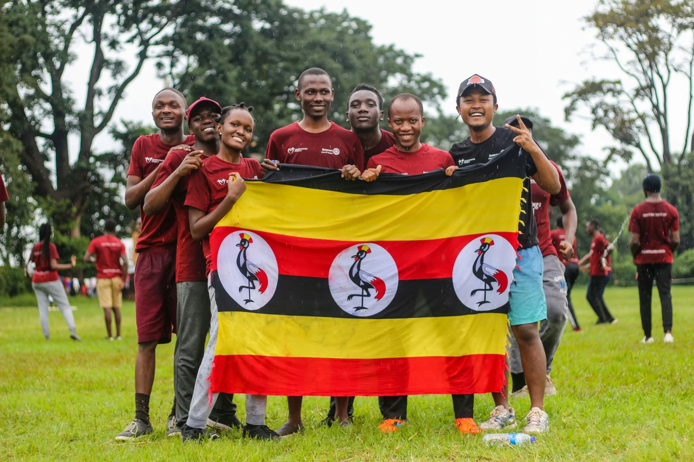

Weather
Temperature: 10°C
Wind Speed: 12 km/h
Wind Chill: N/A
About Uganda
Uganda is a landlocked country in East Africa celebrated for its vibrant landscapes, national parks, and cultural diversity. From the shores of Lake Victoria to the peaks of the Rwenzori Mountains, Uganda blends natural wonder with warm hospitality.
Highlights
- Discover mountain gorillas in Bwindi Impenetrable Forest.
- Explore the source of the Nile River at Jinja.
- Visit Murchison Falls and see dramatic waterfalls framed by savanna.
- Experience local markets, music, and traditional Ugandan cuisine.